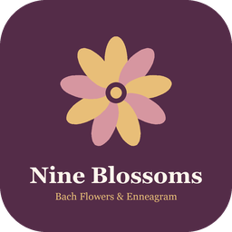

Bach Flowers & Enneagram

Nine Soul Blossoms
Your app for the nine blossoms of the nine types.
Which blossom mirrors your inner pattern? Find your Enneagram type, get to know its Bach flower and let each day invite you a little further.
Free: find your type, your blossom, the finder and a whole chapter. The full version is a one-time purchase, no subscription.
Try it freeOn your phone: open in the browser, then choose “Add to Home Screen”.
The nine blossoms
Every Enneagram type has its own blossom, a guiding thought and a chapter of its own.


What the app offers
Find your type with the 60-second scan, plus the blossom of your type with a profile.
Six parts per blossom as excerpts from the book: introduction, inner structure, inner stance, signature, experience, closing image.
“How do I feel right now?” leads to the matching blossom.
Date, weather, health tip and the blossom of the day.
“Less is more”: impulses need time.
Your own notes stay on the device. Send blossoms to friends as an image or PDF.
Free and full version
From whom
Important notice: The content of the app does not replace medical or psychotherapeutic diagnosis or treatment. If you have health complaints or psychological problems, please consult a doctor, psychotherapist, alternative practitioner or other qualified professional. In an emergency call your local emergency number. The texts are prompts for self-reflection and make no promises of healing. An effect of Bach flowers has not been proven scientifically.